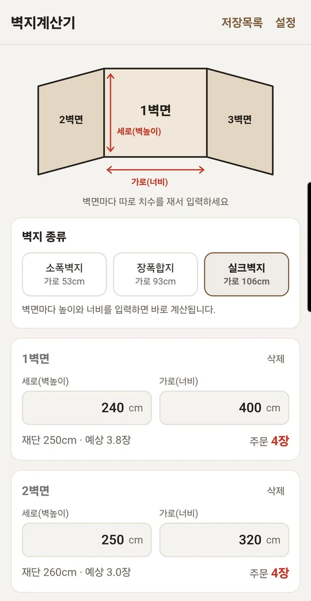
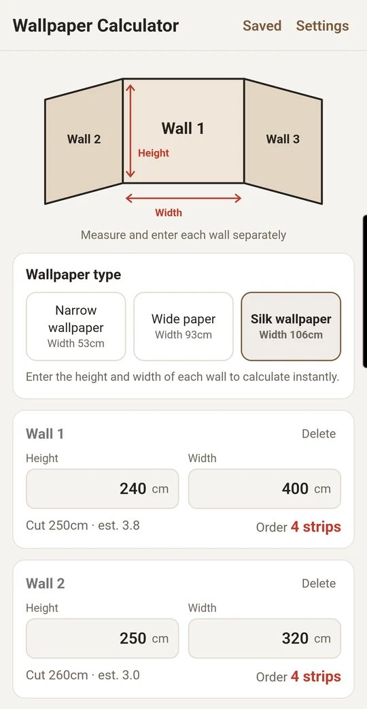
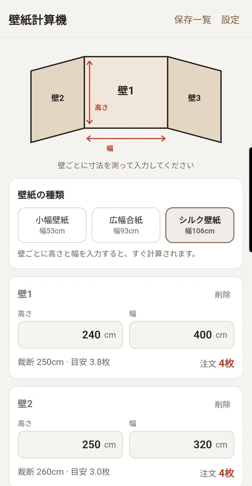
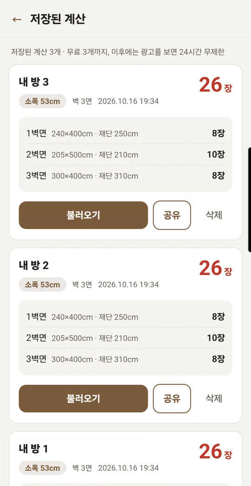
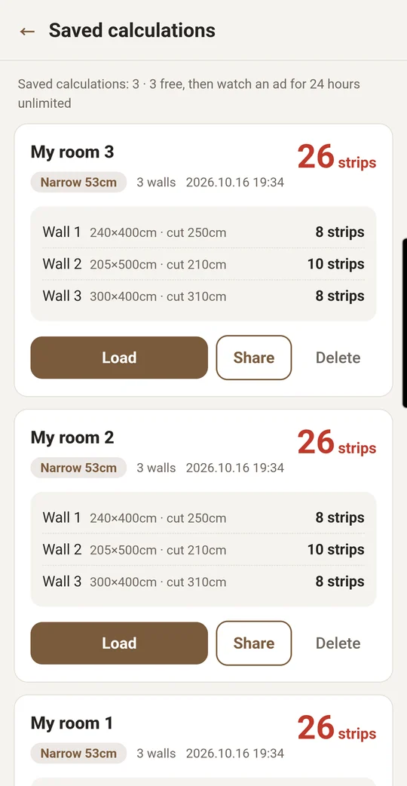
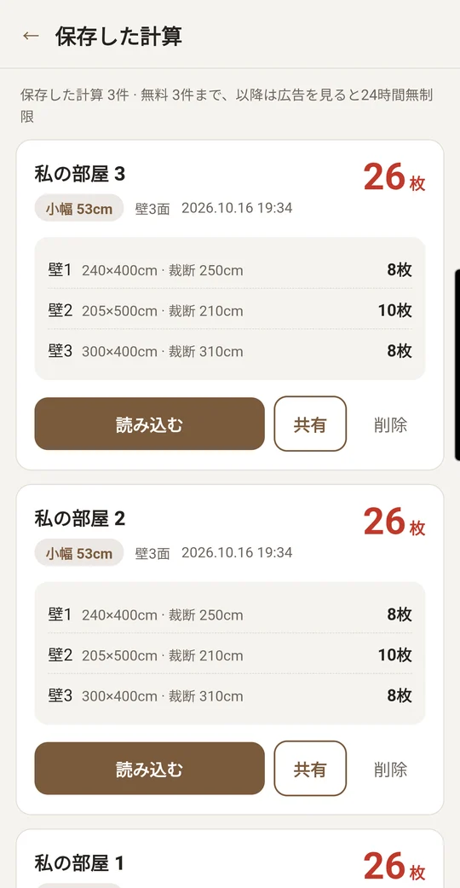

여러 벽면을 한 번에Many walls at once複数の壁をまとめて
벽면마다 치수를 넣으면 벽별 장수와 총 구매 장수가 한눈에 나와요.Enter every wall and see the strips per wall and the grand total at a glance.壁ごとに寸法を入れると、壁別の枚数と合計枚数がひと目でわかります。
벽면의 높이와 너비만 입력하면, 선택한 벽지 폭에 맞춰 필요한 장수와 재단 길이를 알려 드려요. 여러 벽면을 한 번에 더하고, 결과는 저장하고 공유할 수 있어요. Enter each wall's height and width and get the number of strips and the cut length for the wallpaper width you choose. Add up several walls at once, then save or share the result. 壁の高さと幅を入力するだけで、選んだ壁紙の幅に合わせて必要な枚数と裁断の長さがわかります。複数の壁をまとめて計算し、結果を保存・共有できます。






벽면마다 치수를 넣으면 벽별 장수와 총 구매 장수가 한눈에 나와요.Enter every wall and see the strips per wall and the grand total at a glance.壁ごとに寸法を入れると、壁別の枚数と合計枚数がひと目でわかります。
벽지 폭 53cm, 93cm, 106cm 중에서 고르면 그에 맞게 계산해요.Pick a width of 53 cm, 93 cm or 106 cm and the result adjusts accordingly.壁紙の幅 53cm・93cm・106cm から選ぶと、それに合わせて計算します。
방별로 계산 결과를 저장해 두고, 가족이나 업체에 문자로 바로 보낼 수 있어요.Keep a result for each room and send it to family or a shop by message.部屋ごとに結果を保存し、家族や業者にメッセージですぐ送れます。
입력한 치수와 저장 내용은 서버로 보내지 않고 내 폰에만 보관돼요.Your measurements and saved results are never sent to a server. They stay on your device.入力した寸法や保存内容はサーバーに送信されず、端末内にのみ保存されます。